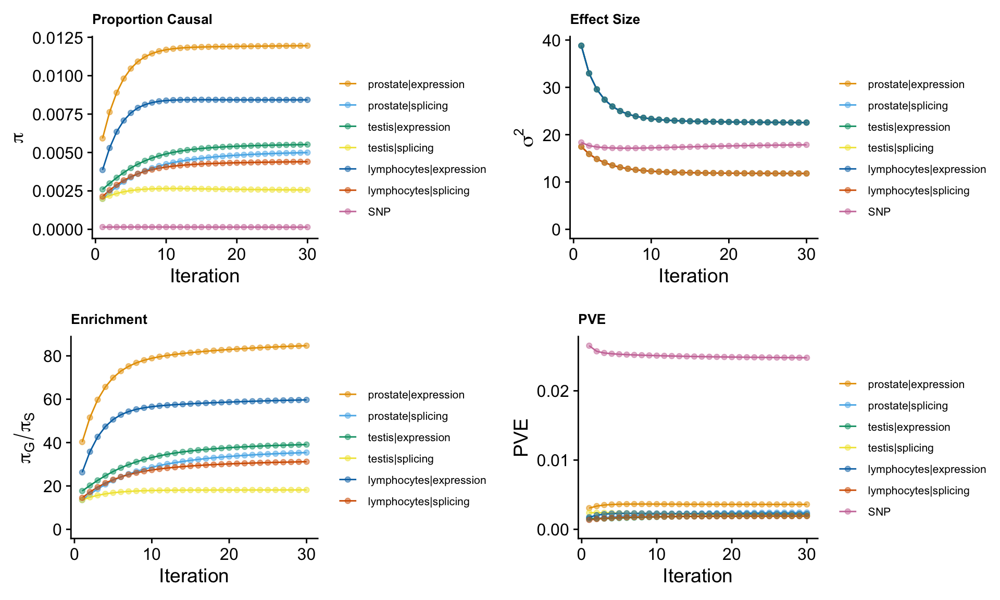
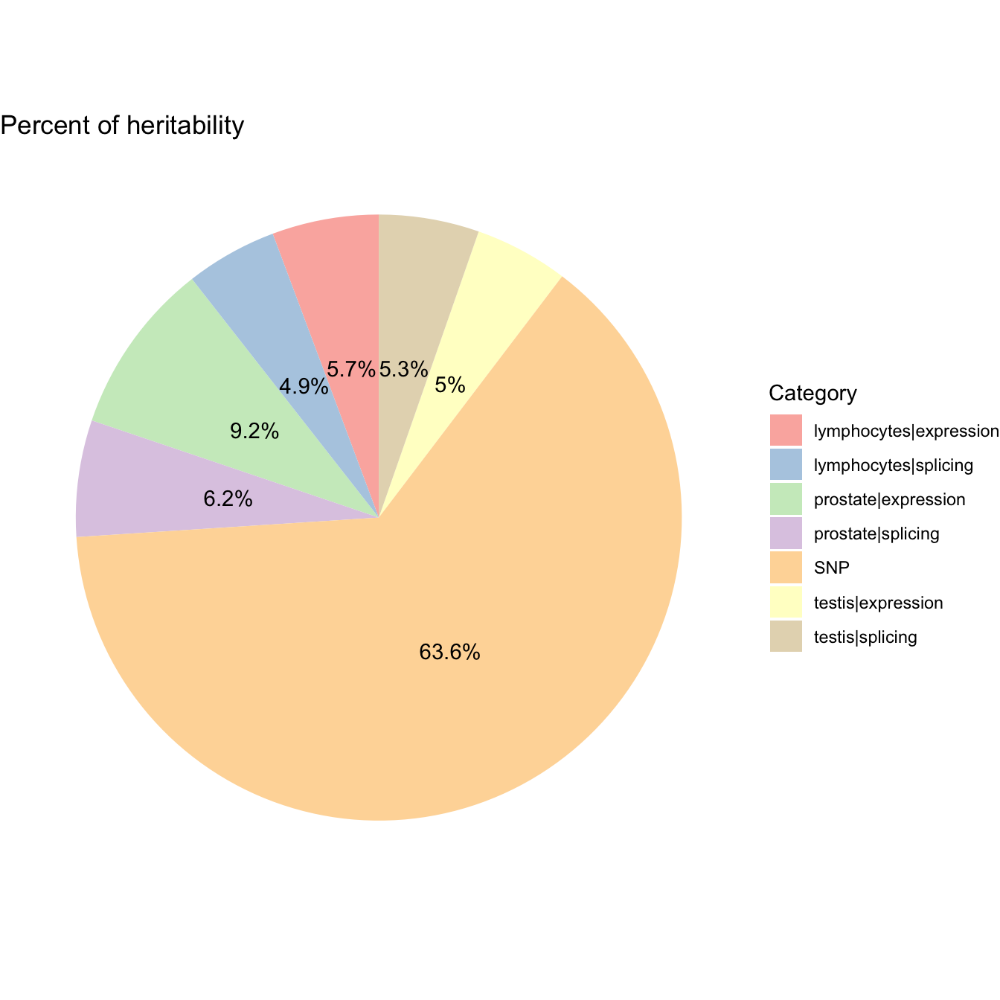
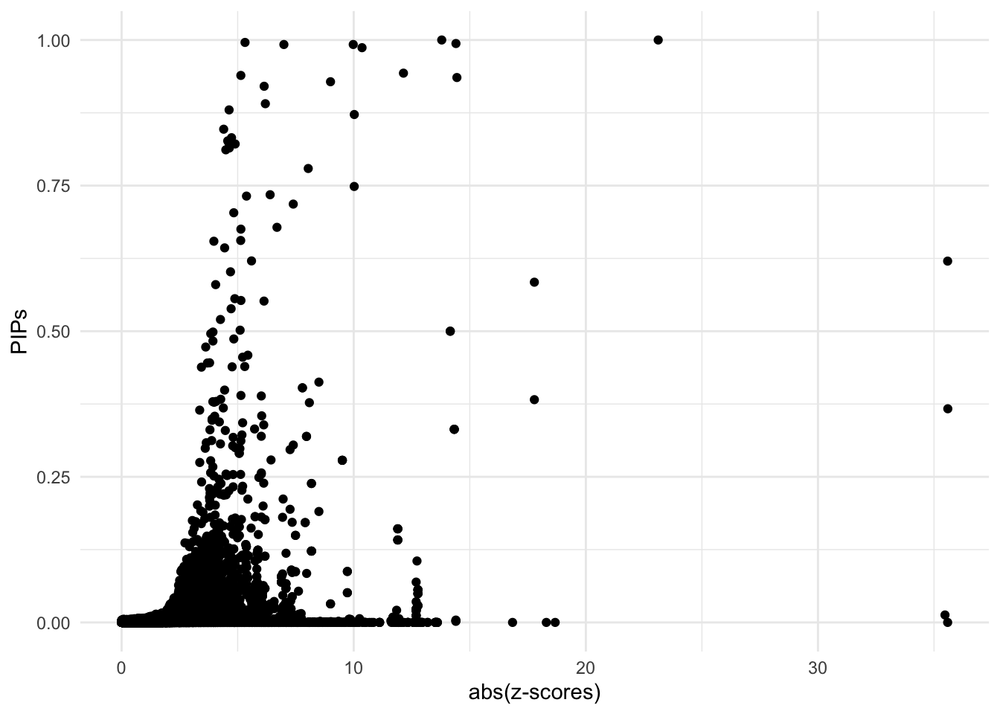

Prostate Cancer ~ Predictdb eQTL&sQTL from Prostate & Testis & Lymphocytes
Nina Yifan Yang
2024-10-07
Last updated: 2024-10-07
Checks: 7 0
Knit directory: Multigroup_cTWAS/
This reproducible R Markdown analysis was created with workflowr (version 1.7.1). The Checks tab describes the reproducibility checks that were applied when the results were created. The Past versions tab lists the development history.
Great! Since the R Markdown file has been committed to the Git repository, you know the exact version of the code that produced these results.
Great job! The global environment was empty. Objects defined in the global environment can affect the analysis in your R Markdown file in unknown ways. For reproduciblity it’s best to always run the code in an empty environment.
The command set.seed(20241004) was run prior to running
the code in the R Markdown file. Setting a seed ensures that any results
that rely on randomness, e.g. subsampling or permutations, are
reproducible.
Great job! Recording the operating system, R version, and package versions is critical for reproducibility.
Nice! There were no cached chunks for this analysis, so you can be confident that you successfully produced the results during this run.
Great job! Using relative paths to the files within your workflowr project makes it easier to run your code on other machines.
Great! You are using Git for version control. Tracking code development and connecting the code version to the results is critical for reproducibility.
The results in this page were generated with repository version cfdba1a. See the Past versions tab to see a history of the changes made to the R Markdown and HTML files.
Note that you need to be careful to ensure that all relevant files for
the analysis have been committed to Git prior to generating the results
(you can use wflow_publish or
wflow_git_commit). workflowr only checks the R Markdown
file, but you know if there are other scripts or data files that it
depends on. Below is the status of the Git repository when the results
were generated:
Ignored files:
Ignored: .DS_Store
Ignored: .Rhistory
Ignored: analysis/.Rhistory
Note that any generated files, e.g. HTML, png, CSS, etc., are not included in this status report because it is ok for generated content to have uncommitted changes.
These are the previous versions of the repository in which changes were
made to the R Markdown
(analysis/cTWAS_noLD_european_prostatetestislymphocytes_output.Rmd)
and HTML
(docs/cTWAS_noLD_european_prostatetestislymphocytes_output.html)
files. If you’ve configured a remote Git repository (see
?wflow_git_remote), click on the hyperlinks in the table
below to view the files as they were in that past version.
| File | Version | Author | Date | Message |
|---|---|---|---|---|
| Rmd | cfdba1a | yy896 | 2024-10-07 | wflow_publish("analysis/cTWAS_noLD_european_prostatetestislymphocytes_output.Rmd") |
| html | 93f8704 | yy896 | 2024-10-07 | Build site. |
| Rmd | a480298 | yy896 | 2024-10-07 | wflow_publish("analysis/cTWAS_noLD_european_prostatetestislymphocytes_output.Rmd") |
| html | fce136d | yy896 | 2024-10-04 | Build site. |
| Rmd | a715301 | yy896 | 2024-10-04 | Add my first analysis |
We present a sample cTWAS report based on real data analysis. The analyzed trait is prostate cancer, the prediction models are Prostate & Testis & Lymphocytes gene expression and splicing models trained on GTEx v8 in the PredictDB format.
Analysis Settings
Input Data
- GWAS Z-scores
The summary statistics for prostate cancer are downloaded from https://www.ebi.ac.uk/gwas/downloads/summary-statistics, using dataset ID: GCST90274714.
The sample size is
[1] "gwas_n = 726828"- Prediction models
The prediction models used in this analysis are prostate & testis & lymphocytes gene expression and splicing models, trained on GTEx v8 in the PredictDB format. These models can be downloaded from https://predictdb.org/post/2021/07/21/gtex-v8-models-on-eqtl-and-sqtl/
- Reference data
We did not include LD reference in the analysis.
Data processing and harmonization
We map the reference SNPs to regions following the instructions from the cTWAS tutorial.
When processing z-scores, we exclude multi-allelic and
strand-ambiguous variants by setting
drop_multiallelic = TRUE and
drop_strand_ambig = TRUE.
The process can be divided into steps below, users can expand the code snippets below to view the exact code used.
- Input and output settings
weight_prostate_expression_file <- system.file("extdata/project_data",
"mashr_Prostate_e.db", package = "ctwas")
weight_prostate_splicing_file <- system.file("extdata/project_data",
"mashr_Prostate_s.db", package = "ctwas")
weight_testis_expression_file <- system.file("extdata/project_data",
"mashr_Testis_e.db", package = "ctwas")
weight_testis_splicing_file <- system.file("extdata/project_data",
"mashr_Testis_s.db", package = "ctwas")
weight_lymphocytes_expression_file <- system.file("extdata/project_data",
"mashr_Cells_EBV-transformed_lymphocytes_e.db", package = "ctwas")
weight_lymphocytes_splicing_file <- system.file("extdata/project_data",
"mashr_Cells_EBV-transformed_lymphocytes_s.db", package = "ctwas")
z_snp <- vroom::vroom("~/Desktop/Prostate Cancer Project/GCST90274714.mod.tsv.gz", col_names = TRUE, show_col_types = FALSE)
z_snp$Z <- z_snp$beta / z_snp$standard_error
z_snp <- z_snp[, c("rsid", "other_allele", "effect_allele", "Z")]
colnames(z_snp) <- c("id", "A1", "A2", "z")
region_file <- system.file("extdata/ldetect", "EUR.b38.ldetect.regions.RDS", package = "ctwas")
region_info <- readRDS(region_file)
## other parameters
ncore <- 6- Preprocessing GWAS
### Preprocess SNP_map
ref_snp_info_file <- system.file("extdata/project_data", "ukb_b38_0.1_var_info.Rvar.gz", package = "ctwas")
ref_snp_info <- data.table::fread(ref_snp_info_file, sep = "\t")
class(ref_snp_info) <- "data.frame"
res <- create_snp_map(region_info, ref_snp_info)
region_info <- res$region_info
snp_map <- res$snp_map
### Preprocess GWAS z-scores
z_snp <- preprocess_z_snp(z_snp, snp_map,
drop_multiallelic = TRUE,
drop_strand_ambig = TRUE)- Preprocessing weights
weights_prostate_expression <- preprocess_weights(weight_prostate_expression_file,
region_info,
gwas_snp_ids = z_snp$id,
snp_map = snp_map,
type = "expression",
context = "prostate",
weight_name = "prostate_expression",
weight_format = "PredictDB",
drop_strand_ambig = TRUE,
scale_predictdb_weights = TRUE,
load_predictdb_LD = TRUE,
filter_protein_coding_genes = TRUE,
ncore = 6)
weights_prostate_splicing <- preprocess_weights(weight_prostate_splicing_file,
region_info,
gwas_snp_ids = z_snp$id,
snp_map = snp_map,
type = "splicing",
context = "prostate",
weight_name = "prostate_splicing",
weight_format = "PredictDB",
drop_strand_ambig = TRUE,
scale_predictdb_weights = TRUE,
load_predictdb_LD = TRUE,
filter_protein_coding_genes = TRUE,
ncore = 6)
weights_testis_expression <- preprocess_weights(weight_testis_expression_file,
region_info,
gwas_snp_ids = z_snp$id,
snp_map = snp_map,
type = "expression",
context = "testis",
weight_name = "testis_expression",
weight_format = "PredictDB",
drop_strand_ambig = TRUE,
scale_predictdb_weights = TRUE,
load_predictdb_LD = TRUE,
filter_protein_coding_genes = TRUE,
ncore = 6)
weights_testis_splicing <- preprocess_weights(weight_testis_splicing_file,
region_info,
gwas_snp_ids = z_snp$id,
snp_map = snp_map,
type = "splicing",
context = "testis",
weight_name = "testis_splicing",
weight_format = "PredictDB",
drop_strand_ambig = TRUE,
scale_predictdb_weights = TRUE,
load_predictdb_LD = TRUE,
filter_protein_coding_genes = TRUE,
ncore = 6)
weights_lymphocytes_expression <- preprocess_weights(weight_lymphocytes_expression_file,
region_info,
gwas_snp_ids = z_snp$id,
snp_map = snp_map,
type = "expression",
context = "lymphocytes",
weight_name = "lymphocytes_expression",
weight_format = "PredictDB",
drop_strand_ambig = TRUE,
scale_predictdb_weights = TRUE,
load_predictdb_LD = TRUE,
filter_protein_coding_genes = TRUE,
ncore = 6)
weights_lymphocytes_splicing <- preprocess_weights(weight_lymphocytes_splicing_file,
region_info,
gwas_snp_ids = z_snp$id,
snp_map = snp_map,
type = "splicing",
context = "lymphocytes",
weight_name = "lymphocytes_splicing",
weight_format = "PredictDB",
drop_strand_ambig = TRUE,
scale_predictdb_weights = TRUE,
load_predictdb_LD = TRUE,
filter_protein_coding_genes = TRUE,
ncore = 6)
weights <- c(
weights_prostate_expression,
weights_prostate_splicing,
weights_testis_expression,
weights_testis_splicing,
weights_lymphocytes_expression,
weights_lymphocytes_splicing)Running cTWAS analysis
We use the ctwas main function ctwas_sumstats_noLD to
run the cTWAS analysis without LD. For more details on this function,
refer to the cTWAS tutorial: https://xinhe-lab.github.io/multigroup_ctwas/articles/minimal_tutorial.html
All arguments are set to their default values.
Users can expand the code snippets below to view the exact code used.
ctwas_res <- ctwas_sumstats_noLD(z_snp,
weights,
region_info,
snp_map,
thin = 0.1,
ncore = 6)Parameter estimation
ctwas_res is the object contains the outputs of
cTWAS
We extract the estimated parameters by
param <- ctwas_res$param
We make plots using the function
make_convergence_plots(param, gwas_n) to see how estimated
parameters converge during the execution of the program:

| Version | Author | Date |
|---|---|---|
| fce136d | yy896 | 2024-10-04 |
These plots show the estimated prior inclusion probability, prior effect size variance, enrichment and proportion of variance explained (PVE) over the iterations of parameter estimation. The enrichment is defined as the ratio of the prior inclusion probability of molecular traits over the prior inclusion probability of variants. We generally expect molecular traits to have higher prior inclusion probability than variants. Enrichment values typically range from 20 - 100 for expression traits.
Then, we use summarize_param(param, gwas_n) to obtain
estimated parameters (from the last iteration) and to compute the PVE by
variants and molecular traits.
[1] "The number of genes/introns/SNPs used in the analysis is:" prostate|expression prostate|splicing testis|expression
9693 29875 11361
testis|splicing lymphocytes|expression lymphocytes|splicing
50036 8478 26609
SNP
7146350 ctwas_parameters$attributable_pve contains the
proportion of heritability mediated by molecular traits and variants, we
visualize it using pie chart.
ctwas_parameters <- summarize_param(param, gwas_n)
data <- data.frame(
category = names(ctwas_parameters$attributable_pve),
percentage = ctwas_parameters$attributable_pve
)
# Calculate percentage labels for the chart
data$percentage_label <- paste0(round(data$percentage * 100, 1), "%")
ggplot(data, aes(x = "", y = percentage, fill = category)) +
geom_bar(stat = "identity", width = 1) +
coord_polar("y", start = 0) +
theme_void() + # Remove background and axes
geom_text(aes(label = percentage_label),
position = position_stack(vjust = 0.5)) +
scale_fill_brewer(palette = "Pastel1") +
labs(fill = "Category") +
ggtitle("Percent of heritability")
| Version | Author | Date |
|---|---|---|
| fce136d | yy896 | 2024-10-04 |
Diagnosis plots
For all genes analyzed, we compare the z-scores and fine-mapping PIPs”
ggplot(data = finemap_res[finemap_res$type!="SNP",], aes(x = abs(z), y = susie_pip)) +
geom_point() +
labs(x = "abs(z-scores)", y = "PIPs") +
theme_minimal()
| Version | Author | Date |
|---|---|---|
| fce136d | yy896 | 2024-10-04 |
Fine-mapping results
We process the fine-mapping results here.
We first add gene annotations to cTWAS results.
mapping_table is the combination of both expression and
splicing data.
finemap_res <- anno_finemap_res(finemap_res,
snp_map = snp_map,
mapping_table = mapping_table,
add_gene_annot = TRUE,
map_by = "molecular_id",
drop_unmapped = TRUE,
add_position = TRUE,
use_gene_pos = "mid")The annotated fine-mapping results, ones within credible sets are shown
Next, we compute gene PIPs across different types of molecular traits.
Combined PIPs
library(dplyr)
combined_pip_by_group <- combine_gene_pips(finemap_res,
group_by = "gene_name",
by = "group",
method = "combine_cs",
filter_cs = TRUE)2024-10-07 17:27:52.748443 INFO::Limit gene results to credible setscombined_pip_table <- subset(combined_pip_by_group, combined_pip > 0.8)
DT::datatable(combined_pip_table)GSEA Analysis
Warning in preparePathwaysAndStats(pathways, stats, minSize, maxSize,
gseaParam, : All values in the stats vector are greater than zero and scoreType
is "std", maybe you should switch to scoreType = "pos".
Warning in preparePathwaysAndStats(pathways, stats, minSize, maxSize,
gseaParam, : All values in the stats vector are greater than zero and scoreType
is "std", maybe you should switch to scoreType = "pos".
Warning in preparePathwaysAndStats(pathways, stats, minSize, maxSize,
gseaParam, : All values in the stats vector are greater than zero and scoreType
is "std", maybe you should switch to scoreType = "pos".
Warning in preparePathwaysAndStats(pathways, stats, minSize, maxSize,
gseaParam, : All values in the stats vector are greater than zero and scoreType
is "std", maybe you should switch to scoreType = "pos".
Locus plots (from highest PIP to lowest 0.8 cutoff)
make_locusplot(finemap_res,
region_id = "20_34225635_36332043",
ens_db = ens_db,
weights = weights,
highlight_pip = 0.8,
filter_protein_coding_genes = TRUE,
filter_cs = TRUE,
color_pval_by = "cs",
color_pip_by = "cs")2024-10-07 17:27:59.359799 INFO::Limit to protein coding genes
2024-10-07 17:27:59.365049 INFO::focal id: ENSG00000126001.15|testis_expression
2024-10-07 17:27:59.36538 INFO::focal molecular trait: CEP250 testis expression
2024-10-07 17:27:59.36571 INFO::Range of locus: chr20:34225783-36331600chromosome 20, position 34225783 to 363316004318 SNPs/datapoints2024-10-07 17:27:59.485161 INFO::focal molecular trait QTL positions: 35445740,35454222,35456125
2024-10-07 17:27:59.501214 INFO::Limit PIPs to credible setsWarning: ggrepel: 880 unlabeled data points (too many overlaps). Consider
increasing max.overlaps
make_locusplot(finemap_res,
region_id = "2_240620667_241210506",
ens_db = ens_db,
weights = weights,
highlight_pip = 0.8,
filter_protein_coding_genes = TRUE,
filter_cs = TRUE,
color_pval_by = "cs",
color_pip_by = "cs")2024-10-07 17:28:00.883439 INFO::Limit to protein coding genes
2024-10-07 17:28:00.884051 INFO::focal id: intron_2_241195845_241199316|prostate_splicing
2024-10-07 17:28:00.884298 INFO::focal molecular trait: ANO7 prostate splicing
2024-10-07 17:28:00.884583 INFO::Range of locus: chr2:240618245-241608572chromosome 2, position 240618245 to 2416085722174 SNPs/datapoints2024-10-07 17:28:00.98753 INFO::focal molecular trait QTL positions: 241195850,241202304
2024-10-07 17:28:01.001023 INFO::Limit PIPs to credible setsWarning: ggrepel: 213 unlabeled data points (too many overlaps). Consider
increasing max.overlaps
make_locusplot(finemap_res,
region_id = "19_54099074_55216712",
ens_db = ens_db,
weights = weights,
highlight_pip = 0.8,
filter_protein_coding_genes = TRUE,
filter_cs = TRUE,
color_pval_by = "cs",
color_pip_by = "cs")2024-10-07 17:28:01.840891 INFO::Limit to protein coding genes
2024-10-07 17:28:01.841569 INFO::focal id: ENSG00000170892.10|testis_expression
2024-10-07 17:28:01.84184 INFO::focal molecular trait: TSEN34 testis expression
2024-10-07 17:28:01.842123 INFO::Range of locus: chr19:54098580-55244488chromosome 19, position 54098580 to 552444884136 SNPs/datapoints2024-10-07 17:28:01.905927 INFO::focal molecular trait QTL positions: 54189591,54190017
2024-10-07 17:28:02.082654 INFO::Limit PIPs to credible setsWarning: ggrepel: 388 unlabeled data points (too many overlaps). Consider
increasing max.overlaps
make_locusplot(finemap_res,
region_id = "17_150263_1269105",
ens_db = ens_db,
weights = weights,
highlight_pip = 0.8,
filter_protein_coding_genes = TRUE,
filter_cs = TRUE,
color_pval_by = "cs",
color_pip_by = "cs")2024-10-07 17:28:02.978618 INFO::Limit to protein coding genes
2024-10-07 17:28:02.979229 INFO::focal id: ENSG00000179409.10|prostate_expression
2024-10-07 17:28:02.979489 INFO::focal molecular trait: GEMIN4 prostate expression
2024-10-07 17:28:02.979781 INFO::Range of locus: chr17:150409-1727661chromosome 17, position 150409 to 17276614317 SNPs/datapoints2024-10-07 17:28:03.035201 INFO::focal molecular trait QTL positions: 715725
2024-10-07 17:28:03.048131 INFO::Limit PIPs to credible setsWarning: ggrepel: 210 unlabeled data points (too many overlaps). Consider
increasing max.overlaps
make_locusplot(finemap_res,
region_id = "11_124625632_126441425",
ens_db = ens_db,
weights = weights,
highlight_pip = 0.8,
filter_protein_coding_genes = TRUE,
filter_cs = TRUE,
color_pval_by = "cs",
color_pip_by = "cs")2024-10-07 17:28:03.839996 INFO::Limit to protein coding genes
2024-10-07 17:28:03.84067 INFO::focal id: ENSG00000165495.15|prostate_expression
2024-10-07 17:28:03.840942 INFO::focal molecular trait: PKNOX2 prostate expression
2024-10-07 17:28:03.841232 INFO::Range of locus: chr11:124627414-126441118chromosome 11, position 124627414 to 1264411185527 SNPs/datapoints2024-10-07 17:28:03.898133 INFO::focal molecular trait QTL positions: 125184897
2024-10-07 17:28:03.911219 INFO::Limit PIPs to credible setsWarning: ggrepel: 542 unlabeled data points (too many overlaps). Consider
increasing max.overlaps
make_locusplot(finemap_res,
region_id = "16_84412277_85115079",
ens_db = ens_db,
weights = weights,
highlight_pip = 0.8,
filter_protein_coding_genes = TRUE,
filter_cs = TRUE,
color_pval_by = "cs",
color_pip_by = "cs")2024-10-07 17:28:04.891121 INFO::Limit to protein coding genes
2024-10-07 17:28:04.891738 INFO::focal id: ENSG00000153786.12|prostate_expression
2024-10-07 17:28:04.891994 INFO::focal molecular trait: ZDHHC7 prostate expression
2024-10-07 17:28:04.892276 INFO::Range of locus: chr16:84412178-85114834chromosome 16, position 84412178 to 851148343456 SNPs/datapoints2024-10-07 17:28:04.940154 INFO::focal molecular trait QTL positions: 85011497,85011520,85018213
2024-10-07 17:28:04.953492 INFO::Limit PIPs to credible setsWarning: ggrepel: 155 unlabeled data points (too many overlaps). Consider
increasing max.overlaps
make_locusplot(finemap_res,
region_id = "2_236540389_237852338",
ens_db = ens_db,
weights = weights,
highlight_pip = 0.8,
filter_protein_coding_genes = TRUE,
filter_cs = TRUE,
color_pval_by = "cs",
color_pip_by = "cs")2024-10-07 17:28:05.689174 INFO::Limit to protein coding genes
2024-10-07 17:28:05.689825 INFO::focal id: ENSG00000115648.13|lymphocytes_expression
2024-10-07 17:28:05.69011 INFO::focal molecular trait: MLPH lymphocytes expression
2024-10-07 17:28:05.690412 INFO::Range of locus: chr2:236541810-237851575chromosome 2, position 236541810 to 2378515754211 SNPs/datapoints2024-10-07 17:28:05.743998 INFO::focal molecular trait QTL positions: 237484645,237484791
2024-10-07 17:28:05.757419 INFO::Limit PIPs to credible setsWarning: ggrepel: 130 unlabeled data points (too many overlaps). Consider
increasing max.overlaps
make_locusplot(finemap_res,
region_id = "1_153208353_154797927",
ens_db = ens_db,
weights = weights,
highlight_pip = 0.8,
filter_protein_coding_genes = TRUE,
filter_cs = TRUE,
color_pval_by = "cs",
color_pip_by = "cs")2024-10-07 17:28:06.445249 INFO::Limit to protein coding genes
2024-10-07 17:28:06.445917 INFO::focal id: ENSG00000143545.8|lymphocytes_expression
2024-10-07 17:28:06.446192 INFO::focal molecular trait: RAB13 lymphocytes expression
2024-10-07 17:28:06.446482 INFO::Range of locus: chr1:153208786-154797763chromosome 1, position 153208786 to 1547977633641 SNPs/datapoints2024-10-07 17:28:06.51004 INFO::focal molecular trait QTL positions: 153985724,153989308
2024-10-07 17:28:06.523498 INFO::Limit PIPs to credible setsWarning: ggrepel: 432 unlabeled data points (too many overlaps). Consider
increasing max.overlaps
make_locusplot(finemap_res,
region_id = "19_46646825_48778970",
ens_db = ens_db,
weights = weights,
highlight_pip = 0.8,
filter_protein_coding_genes = TRUE,
filter_cs = TRUE,
color_pval_by = "cs",
color_pip_by = "cs")2024-10-07 17:28:07.672917 INFO::Limit to protein coding genes
2024-10-07 17:28:07.673628 INFO::focal id: ENSG00000105327.17|prostate_expression
2024-10-07 17:28:07.673915 INFO::focal molecular trait: BBC3 prostate expression
2024-10-07 17:28:07.674208 INFO::Range of locus: chr19:46646725-48778681chromosome 19, position 46646725 to 487786816583 SNPs/datapoints2024-10-07 17:28:07.736237 INFO::focal molecular trait QTL positions: 47232618
2024-10-07 17:28:07.749276 INFO::Limit PIPs to credible setsWarning: ggrepel: 738 unlabeled data points (too many overlaps). Consider
increasing max.overlaps
make_locusplot(finemap_res,
region_id = "1_203365606_204711940",
ens_db = ens_db,
weights = weights,
highlight_pip = 0.8,
filter_protein_coding_genes = TRUE,
filter_cs = TRUE,
color_pval_by = "cs",
color_pip_by = "cs")2024-10-07 17:28:09.348526 INFO::Limit to protein coding genes
2024-10-07 17:28:09.349151 INFO::focal id: ENSG00000133056.13|lymphocytes_expression
2024-10-07 17:28:09.349395 INFO::focal molecular trait: PIK3C2B lymphocytes expression
2024-10-07 17:28:09.349669 INFO::Range of locus: chr1:203365611-204711982chromosome 1, position 203365611 to 2047119823607 SNPs/datapoints2024-10-07 17:28:09.405113 INFO::focal molecular trait QTL positions: 204495053
2024-10-07 17:28:09.4181 INFO::Limit PIPs to credible setsWarning: ggrepel: 137 unlabeled data points (too many overlaps). Consider
increasing max.overlaps
make_locusplot(finemap_res,
region_id = "22_17813322_19924835",
ens_db = ens_db,
weights = weights,
highlight_pip = 0.8,
filter_protein_coding_genes = TRUE,
filter_cs = TRUE,
color_pval_by = "cs",
color_pip_by = "cs")2024-10-07 17:28:10.177256 INFO::Limit to protein coding genes
2024-10-07 17:28:10.17787 INFO::focal id: ENSG00000184058.12|prostate_expression
2024-10-07 17:28:10.178136 INFO::focal molecular trait: TBX1 prostate expression
2024-10-07 17:28:10.178417 INFO::Range of locus: chr22:17813372-19925414chromosome 22, position 17813372 to 199254144739 SNPs/datapoints2024-10-07 17:28:10.231226 INFO::focal molecular trait QTL positions: 19762002
2024-10-07 17:28:10.244227 INFO::Limit PIPs to credible setsWarning: ggrepel: 262 unlabeled data points (too many overlaps). Consider
increasing max.overlaps
make_locusplot(finemap_res,
region_id = "20_33027017_34225635",
ens_db = ens_db,
weights = weights,
highlight_pip = 0.8,
filter_protein_coding_genes = TRUE,
filter_cs = TRUE,
color_pval_by = "cs",
color_pip_by = "cs")2024-10-07 17:28:11.158429 INFO::Limit to protein coding genes
2024-10-07 17:28:11.158974 INFO::focal id: ENSG00000101417.11|lymphocytes_expression
2024-10-07 17:28:11.159216 INFO::focal molecular trait: PXMP4 lymphocytes expression
2024-10-07 17:28:11.159482 INFO::Range of locus: chr20:33027532-34224952chromosome 20, position 33027532 to 342249521953 SNPs/datapoints2024-10-07 17:28:11.206604 INFO::focal molecular trait QTL positions: 33720469
2024-10-07 17:28:11.220388 INFO::Limit PIPs to credible setsWarning: ggrepel: 123 unlabeled data points (too many overlaps). Consider
increasing max.overlaps
make_locusplot(finemap_res,
region_id = "2_205870980_207780675",
ens_db = ens_db,
weights = weights,
highlight_pip = 0.8,
filter_protein_coding_genes = TRUE,
filter_cs = TRUE,
color_pval_by = "cs",
color_pip_by = "cs")2024-10-07 17:28:11.951352 INFO::Limit to protein coding genes
2024-10-07 17:28:11.951966 INFO::focal id: intron_2_207165706_207166757|lymphocytes_splicing
2024-10-07 17:28:11.952226 INFO::focal molecular trait: MIR7845 lymphocytes splicing
2024-10-07 17:28:11.952502 INFO::Range of locus: chr2:205871698-207779797chromosome 2, position 205871698 to 2077797974879 SNPs/datapoints2024-10-07 17:28:12.007273 INFO::focal molecular trait QTL positions: 207166747
2024-10-07 17:28:12.021223 INFO::Limit PIPs to credible setsWarning: ggrepel: 199 unlabeled data points (too many overlaps). Consider
increasing max.overlaps
make_locusplot(finemap_res,
region_id = "10_101189482_102620653",
ens_db = ens_db,
weights = weights,
highlight_pip = 0.8,
filter_protein_coding_genes = TRUE,
filter_cs = TRUE,
color_pval_by = "cs",
color_pip_by = "cs")2024-10-07 17:28:12.779624 INFO::Limit to protein coding genes
2024-10-07 17:28:12.780211 INFO::focal id: ENSG00000138111.14|prostate_expression
2024-10-07 17:28:12.780458 INFO::focal molecular trait: MFSD13A prostate expression
2024-10-07 17:28:12.780727 INFO::Range of locus: chr10:101190250-102621720chromosome 10, position 101190250 to 1026217202735 SNPs/datapoints2024-10-07 17:28:12.831381 INFO::focal molecular trait QTL positions: 102462097,102463206,102466080
2024-10-07 17:28:12.845052 INFO::Limit PIPs to credible setsWarning: ggrepel: 412 unlabeled data points (too many overlaps). Consider
increasing max.overlaps
make_locusplot(finemap_res,
region_id = "8_81044160_81781504",
ens_db = ens_db,
weights = weights,
highlight_pip = 0.8,
filter_protein_coding_genes = TRUE,
filter_cs = TRUE,
color_pval_by = "cs",
color_pip_by = "cs")2024-10-07 17:28:13.728105 INFO::Limit to protein coding genes
2024-10-07 17:28:13.728639 INFO::focal id: ENSG00000164695.4|prostate_expression
2024-10-07 17:28:13.72887 INFO::focal molecular trait: CHMP4C prostate expression
2024-10-07 17:28:13.729128 INFO::Range of locus: chr8:81039839-81781010chromosome 8, position 81039839 to 817810101855 SNPs/datapoints2024-10-07 17:28:13.775196 INFO::focal molecular trait QTL positions: 81741409
2024-10-07 17:28:13.788698 INFO::Limit PIPs to credible setsWarning: ggrepel: 64 unlabeled data points (too many overlaps). Consider
increasing max.overlaps
make_locusplot(finemap_res,
region_id = "1_37083582_38266175",
ens_db = ens_db,
weights = weights,
highlight_pip = 0.8,
filter_protein_coding_genes = TRUE,
filter_cs = TRUE,
color_pval_by = "cs",
color_pip_by = "cs")2024-10-07 17:28:14.492795 INFO::Limit to protein coding genes
2024-10-07 17:28:14.493375 INFO::focal id: ENSG00000163874.10|prostate_expression
2024-10-07 17:28:14.493616 INFO::focal molecular trait: ZC3H12A prostate expression
2024-10-07 17:28:14.493888 INFO::Range of locus: chr1:37083938-38266050chromosome 1, position 37083938 to 382660503063 SNPs/datapoints2024-10-07 17:28:14.547752 INFO::focal molecular trait QTL positions: 37475037,37499397
2024-10-07 17:28:14.561383 INFO::Limit PIPs to credible setsWarning: ggrepel: 227 unlabeled data points (too many overlaps). Consider
increasing max.overlapsWarning: ggrepel: 46 unlabeled data points (too many overlaps). Consider
increasing max.overlaps
make_locusplot(finemap_res,
region_id = "12_11601912_12580594",
ens_db = ens_db,
weights = weights,
highlight_pip = 0.8,
filter_protein_coding_genes = TRUE,
filter_cs = TRUE,
color_pval_by = "cs",
color_pip_by = "cs")2024-10-07 17:28:15.574362 INFO::Limit to protein coding genes
2024-10-07 17:28:15.575007 INFO::focal id: ENSG00000121380.12|prostate_expression
2024-10-07 17:28:15.575264 INFO::focal molecular trait: BCL2L14 prostate expression
2024-10-07 17:28:15.575527 INFO::Range of locus: chr12:11034257-12580271chromosome 12, position 11034257 to 125802712897 SNPs/datapoints2024-10-07 17:28:15.624358 INFO::focal molecular trait QTL positions: 12052195,12052348
2024-10-07 17:28:15.637426 INFO::Limit PIPs to credible setsWarning: ggrepel: 62 unlabeled data points (too many overlaps). Consider
increasing max.overlaps
make_locusplot(finemap_res,
region_id = "12_106564970_108632125",
ens_db = ens_db,
weights = weights,
highlight_pip = 0.8,
filter_protein_coding_genes = TRUE,
filter_cs = TRUE,
color_pval_by = "cs",
color_pip_by = "cs")2024-10-07 17:28:16.125632 INFO::Limit to protein coding genes
2024-10-07 17:28:16.126297 INFO::focal id: ENSG00000120832.9|testis_expression
2024-10-07 17:28:16.126584 INFO::focal molecular trait: MTERF2 testis expression
2024-10-07 17:28:16.126885 INFO::Range of locus: chr12:106564986-108631756chromosome 12, position 106564986 to 1086317565509 SNPs/datapoints2024-10-07 17:28:16.350409 INFO::focal molecular trait QTL positions: 106988381
2024-10-07 17:28:16.363532 INFO::Limit PIPs to credible setsWarning: ggrepel: 212 unlabeled data points (too many overlaps). Consider
increasing max.overlapsWarning: ggrepel: 13 unlabeled data points (too many overlaps). Consider
increasing max.overlaps
make_locusplot(finemap_res,
region_id = "4_38905401_40200989",
ens_db = ens_db,
weights = weights,
highlight_pip = 0.8,
filter_protein_coding_genes = TRUE,
filter_cs = TRUE,
color_pval_by = "cs",
color_pip_by = "cs")2024-10-07 17:28:17.215198 INFO::Limit to protein coding genes
2024-10-07 17:28:17.215795 INFO::focal id: ENSG00000121897.14|prostate_expression
2024-10-07 17:28:17.21607 INFO::focal molecular trait: LIAS prostate expression
2024-10-07 17:28:17.216348 INFO::Range of locus: chr4:38905595-40200074chromosome 4, position 38905595 to 402000743803 SNPs/datapoints2024-10-07 17:28:17.265498 INFO::focal molecular trait QTL positions: 39465159
2024-10-07 17:28:17.27849 INFO::Limit PIPs to credible setsWarning: ggrepel: 256 unlabeled data points (too many overlaps). Consider
increasing max.overlaps
sessionInfo()R version 4.4.1 (2024-06-14)
Platform: aarch64-apple-darwin20
Running under: macOS 15.0.1
Matrix products: default
BLAS: /Library/Frameworks/R.framework/Versions/4.4-arm64/Resources/lib/libRblas.0.dylib
LAPACK: /Library/Frameworks/R.framework/Versions/4.4-arm64/Resources/lib/libRlapack.dylib; LAPACK version 3.12.0
locale:
[1] en_US.UTF-8/en_US.UTF-8/en_US.UTF-8/C/en_US.UTF-8/en_US.UTF-8
time zone: America/New_York
tzcode source: internal
attached base packages:
[1] stats4 stats graphics grDevices utils datasets methods
[8] base
other attached packages:
[1] ReactomePA_1.48.0 ggsci_3.2.0
[3] enrichplot_1.24.4 fgsea_1.30.0
[5] data.table_1.16.0 lubridate_1.9.3
[7] forcats_1.0.0 stringr_1.5.1
[9] dplyr_1.1.4 purrr_1.0.2
[11] tidyr_1.3.1 tibble_3.2.1
[13] tidyverse_2.0.0 ggrepel_0.9.6
[15] ggplot2_3.5.1 EnsDb.Hsapiens.v86_2.99.0
[17] ensembldb_2.28.1 AnnotationFilter_1.28.0
[19] GenomicFeatures_1.56.0 AnnotationDbi_1.66.0
[21] Biobase_2.64.0 GenomicRanges_1.56.1
[23] GenomeInfoDb_1.40.1 IRanges_2.38.1
[25] S4Vectors_0.42.1 BiocGenerics_0.50.0
[27] ctwas_0.4.14 readr_2.1.5
[29] workflowr_1.7.1
loaded via a namespace (and not attached):
[1] splines_4.4.1 later_1.3.2
[3] BiocIO_1.14.0 ggplotify_0.1.2
[5] bitops_1.0-9 R.oo_1.26.0
[7] polyclip_1.10-7 graph_1.82.0
[9] XML_3.99-0.17 lifecycle_1.0.4
[11] httr2_1.0.5 mixsqp_0.3-54
[13] rprojroot_2.0.4 processx_3.8.4
[15] lattice_0.22-6 MASS_7.3-61
[17] crosstalk_1.2.1 magrittr_2.0.3
[19] locuszoomr_0.3.5 plotly_4.10.4
[21] sass_0.4.9 rmarkdown_2.28
[23] jquerylib_0.1.4 yaml_2.3.10
[25] httpuv_1.6.15 cowplot_1.1.3
[27] DBI_1.2.3 RColorBrewer_1.1-3
[29] abind_1.4-8 zlibbioc_1.50.0
[31] pgenlibr_0.3.7 R.utils_2.12.3
[33] ggraph_2.2.1 RCurl_1.98-1.16
[35] yulab.utils_0.1.7 tweenr_2.0.3
[37] rappdirs_0.3.3 git2r_0.33.0.9000
[39] GenomeInfoDbData_1.2.12 irlba_2.3.5.1
[41] tidytree_0.4.6 reactome.db_1.88.0
[43] codetools_0.2-20 DelayedArray_0.30.1
[45] DT_0.33 DOSE_3.30.5
[47] ggforce_0.4.2 tidyselect_1.2.1
[49] aplot_0.2.3 UCSC.utils_1.0.0
[51] farver_2.1.2 viridis_0.6.5
[53] matrixStats_1.4.1 GenomicAlignments_1.40.0
[55] jsonlite_1.8.9 tidygraph_1.3.1
[57] tools_4.4.1 treeio_1.28.0
[59] Rcpp_1.0.13 glue_1.8.0
[61] gridExtra_2.3 SparseArray_1.4.8
[63] xfun_0.48 qvalue_2.36.0
[65] MatrixGenerics_1.16.0 withr_3.0.1
[67] fastmap_1.2.0 LDlinkR_1.4.0
[69] fansi_1.0.6 callr_3.7.6
[71] digest_0.6.37 gridGraphics_0.5-1
[73] timechange_0.3.0 R6_2.5.1
[75] colorspace_2.1-1 GO.db_3.19.1
[77] RSQLite_2.3.7 R.methodsS3_1.8.2
[79] utf8_1.2.4 generics_0.1.3
[81] rtracklayer_1.64.0 graphlayouts_1.2.0
[83] httr_1.4.7 htmlwidgets_1.6.4
[85] S4Arrays_1.4.1 scatterpie_0.2.4
[87] graphite_1.50.0 whisker_0.4.1
[89] pkgconfig_2.0.3 gtable_0.3.5
[91] blob_1.2.4 XVector_0.44.0
[93] shadowtext_0.1.4 htmltools_0.5.8.1
[95] gggrid_0.2-0 ProtGenerics_1.36.0
[97] scales_1.3.0 logging_0.10-108
[99] png_0.1-8 ggfun_0.1.6
[101] knitr_1.48 rstudioapi_0.16.0
[103] tzdb_0.4.0 reshape2_1.4.4
[105] rjson_0.2.23 nlme_3.1-166
[107] curl_5.2.3 cachem_1.1.0
[109] zoo_1.8-12 parallel_4.4.1
[111] restfulr_0.0.15 pillar_1.9.0
[113] grid_4.4.1 vctrs_0.6.5
[115] promises_1.3.0 evaluate_1.0.0
[117] cli_3.6.3 compiler_4.4.1
[119] Rsamtools_2.20.0 rlang_1.1.4
[121] crayon_1.5.3 labeling_0.4.3
[123] ps_1.8.0 getPass_0.2-4
[125] plyr_1.8.9 fs_1.6.4
[127] stringi_1.8.4 viridisLite_0.4.2
[129] BiocParallel_1.38.0 munsell_0.5.1
[131] Biostrings_2.72.1 lazyeval_0.2.2
[133] GOSemSim_2.30.2 Matrix_1.7-0
[135] patchwork_1.3.0 hms_1.1.3
[137] bit64_4.5.2 KEGGREST_1.44.1
[139] highr_0.11 SummarizedExperiment_1.34.0
[141] igraph_2.0.3 memoise_2.0.1
[143] bslib_0.8.0 ggtree_3.12.0
[145] fastmatch_1.1-4 bit_4.5.0
[147] gson_0.1.0 ape_5.8